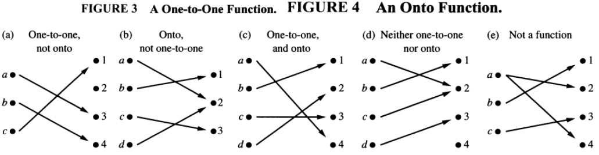
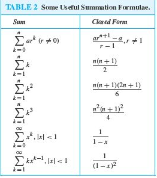
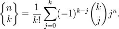
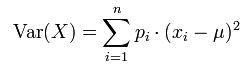
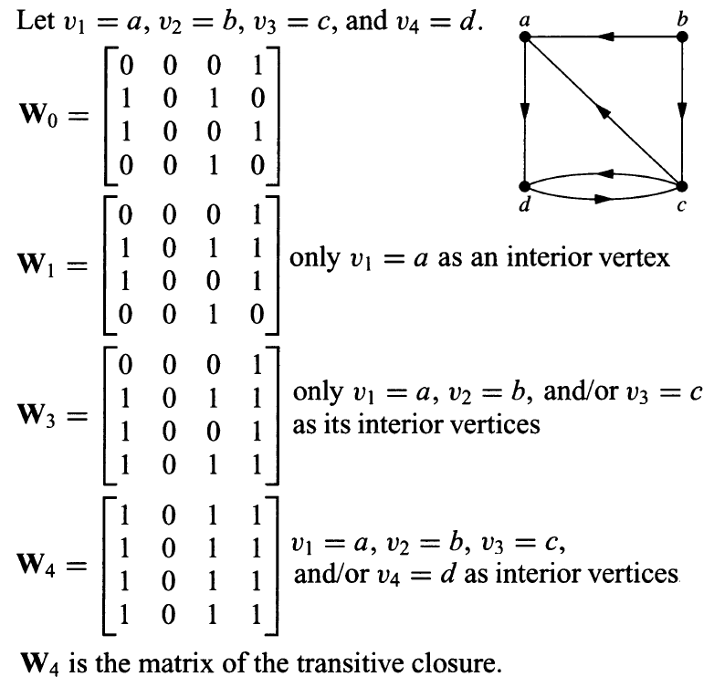
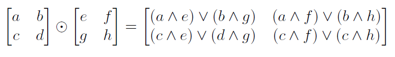
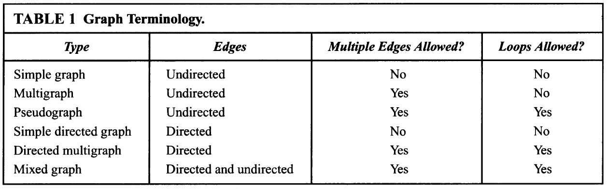
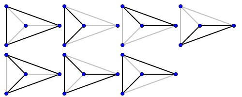
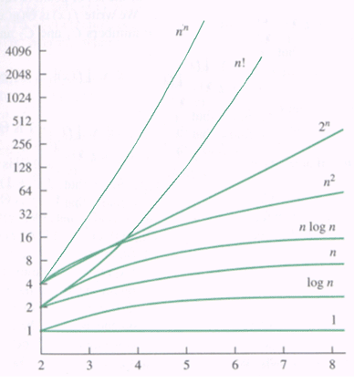

EECS 203 final exam study guide
winter 2012, University of Michigan
by Evan Hahn + Scott Godbold + Brad Hekman + Alex Ihlenburg + Ryan Yezman + Matt Schulte + Lulu Tang + Andy Modell + Kevin Byung + David Brownman + Otto Sipe + Yaoyun Shi + Thomas Lovett + Sean Hacker + Mike Cuskley + Daniel Nees
(add your names here if you helped!)
Feel free to make copies of this document to modify it! I have graduated and won’t be making more changes.
This study guide is free-license in the public domain. Its accuracy is not guaranteed.
EXAM INFO
- You can bring 3 single-sided sheets
- "In addition, in your solutions you are allowed to quote without proof any results proved in the lectures, discussion sections, homework, the sample exam, and the textbook."
PROPOSITIONS AND OPERATIONS
- Proposition - either true or false, but not both
- ¬p = negation of p
- p ∧ q = and (remember that ∧ is like the A in "AND")
- p ∨ q = or
- p ⊕ q = Exclusive or; XOR; only one can be true
- Tautology - always true
- Contradiction - always false
- p ∨ (q ∧ r) ≡ (p v q) ∧ (p v r)
- p ∧ (q v r) ≡ (p ∧ q) v (p ∧ r)
- ¬(p ∧ q) ≡ ¬p v ¬q
- ¬(p ∨ q) ≡ ¬p ∧ ¬q
CONDITIONALS
- p → q: if p, then q
- T → F = F; everything else is true
English ways to express conditionals
- "if p, then q"
- "if p, q"
- "p is sufficient for q "
- "q if p"
- "q when p"
- "a necessary condition for p is q"
- "q unless ¬p"
- "p implies q"
- "p only if q"
- "a sufficient condition for q is p"
- "q whenever p"
- "q is necessary for p"
- "q follows from p"
Logical equivalences
- p → q ≡ ¬p v q
- p → q ≡ ¬q → ¬p
- p v q ≡ ¬p → q
- p ∧ q ≡ ¬(p → ¬q)
- ¬(p → q) ≡ p ∧ ¬q
- (p → q) ∧ (p → r) ≡ p → (q ∧ r)
- (p → r) ∧ (q → r) ≡ (p v q) → r
- (p → q) v (p → r) ≡ p → (q v r)
- (p → r) v (q → r) ≡ (p ∧ q) → r
Biconditional logical equivalences
- p ↔ q ≡ (p → q) ∧ (q → p)
- p ↔ q ≡ ¬p ↔ ¬q
- p ↔ q ≡ (p ∧ q) v (¬p ∧ ¬q)
- ¬(p ↔ q) ≡ p ↔ ¬q
RULES OF INFERENCE
For propositional logic
- [p ∧ (p → q)] → q (modus ponens)
- [¬q ∧ (p → q)] → ¬p (modus tollens)
- [(p → q) ∧ (q → r)] → (p → r) (hypothetical syllogism)
- [(p v q) ∧ ¬p] → q (disjunctive syllogism)
- p → (p v q) (addition)
- (p ∧ q) → p (simplification)
- [(p) ∧ (q)] → (p ∧ q) (conjunction)
- [(p v q) ∧ (¬p v r)] → (q v r) (resolution)
For quantifiers
- ∀x P(x) → P(c) (universal instantiation. Example: "All women are wise", therefore "Lisa is wise.")
- P(c) for arbitrary c → ∀x P(x) (universal generalization)
- ∃x P(x) → P(c) for some c (existential instantiation)
- P(c) → ∃x P(x) for some c (existential generalization)
QUANTIFIERS
- ∀x P(x) = P(x) is true for every x on the domain
- ∃x P(x) = there is an x on the domain for which P(x) is true
- ∃!x P(x) = there is ONLY ONE x on the domain for which P(x) is true
De Morgan's Laws
- ¬∃x P(x) ≡ ∀x ¬P(x)
- ¬∀x P(x) ≡ ∃x ¬P(x)
Nested quantifiers
- ∀x ∃x Q(x) ≡ ∀x (∃x Q(x))
Quantifying two variables
- A helpful PowerPoint
- ∀x ∀y P(x, y) ≡ ∀y ∀x P(x, y) = true when P(x, y) is true for every pair of x and y
- ∀x ∃y P(x, y) = true when, for every x, there is a y for which P(x, y) is true
- ∃x ∀y P(x, y) = true when there is an x for which P(x, y) is true for every y
- ∃x ∃y P(x, y) ≡ ∃y ∃x P(x, y) = true when there's a pair x,y for which P(x, y) is true
PROOFS
- Proof by exhaustion: try everything (only works with a finite number of possibilities)
- Proof by cases: you can break things into groups and show that certain groups work
- Proof by implication
- Assume P, P then Q, therefore Q
- Holds because if P is true you get Q and if P is false then Q is automatically implied
- After you prove Q it is no longer safe to assume, P still holds
- Assume Not Q show that it implies Not P
- Prove each implies the other
- P implies Q AND Q implies P
- Construct a chain of iffs
- Show P iff R iff S iff Q so P iff Q
- Show that if the premise is T or F then something F would be T
- Example: Show that if P is false, then 0=2 since 0 != 2 P must be true
SETS
- A collection of of objects called elements grouped together
- Ordering is not important, just which elements are contained (eg, {x,y} is the same as {y,x})
- x ∈ D shows x is an element of D
- ϕ = the empty set = {}
- N = natural numbers = { 0, 1, 2, ... }
- Z = integers = { ... -2, -1, 0, 1, 2, ... }
- Z+ = positive integers = { 1, 2, 3, 4, ... }
- Q = rationals
- R = reals
- R+ = positive reals
- C = complex numbers
- Sets can contain other sets denoted S ⊆ T showing S is a subset of T or all the elements in S are in T
- Unioning (∪) two sets combines all the elements of two sets (additive)
- Intersection (∩) creates a set containing all elements contained by both sets
- Subtraction (–) creates a set containing all elements of 1st set except the ones in the 2nd set. Example: A - B contains all the elements of A except the ones that are in B.
- The complement of a set is everything except the elements in that set
- A set has a cardinality equal to the number of elements in the set
- Example: S = {1, 2, 3}; |S| = 3
- S = {{1, 2, 3}, {4, 5, 6}}; |S| = 2
- S = {{ϕ}, 1}; |S| = 2
- S = {ϕ, 1}; |S| = 2 //note: if ϕ is contained in the set, then it counts as an element. If the set itself is empty, than the cardinality is 0 (see below).
- S = ϕ; |S| = 0
- The set containing all subsets of a set (I know, kind of strange wording)
- ex. B∈P({1,2}) iff B = { {∅},{1},{2},{1,2} }
- Cardinality of a power set is: |P(S)| = 2^|S|
- Cartesian product of sets
- Gives all possible sets of which the first element comes from set one and the second element comes from set 2
- Notation for defining a set
- A = { n ∈ R | x^3-3x+1 > 0 }
- Two sets are equal if and only if every element in one set is in the other and visa versa
INDUCTION
- P(n) is your predicate
- If P(0) is true and P(k) implies P(k+1) then P(n) is true for all n in the set
- State you are using induction
- Define your predicate P(n)
- Prove that P(0) is true (Base Case)
- Assume P(n) is true
- Show that P(n+1) is true
- P(0) is true and P(0) through P(n) imply P(n+1)
FUNCTIONS
- A function is a mapping from domain A to codomain B such that for any one input there can only be one output
- Denoted f: A → B or f(A) = { y = f(x) | x ∈ A }
- One-to-one/injective - X is one-to-one with Y if every mapping to Y has exactly ONE value in X that hits it
- Onto/surjective - X is onto Y if there exist values in X such that mapping them onto Y will hit every value inside of Y
- Bijective - it goes both ways: onto and one-to-one
- One-to-one correspondence - A function is a one to one correspondence if it is 1-1 and onto
- Inverse functions - a function f-1(x) the maps b onto a iff the function f(x) maps from a to b. This only works if f is onto and 1-1.
- Countable - a infinite set with a one to one correspondence with the set of Natural numbers
- Composite functions - Mapping a to c through a set of two functions that map a to b and then b to c, denoted f o g. Otherwise written as f(g(a)).

ALGORITHMS
- Algorithm - finite sequence of precise instructions to perform a computation
Searches
- Linear search - start at the front, brute-force until you find it. Worst case: O(n)
- Binary search - start at the middle of a sorted list. If you’re too high, search the left half of the list. If you’re too low, search the right half of the list. Worst case: O(log(n))
Sorts
- Bubble sort - switch adjacent values over and over again until you don’t switch no more. Another way to think about bubble sort is: find the biggest element and put it at the end, then look for the second biggest element and put it one from the end and so on.
Worst case O(n2), best case O(n). - Insertion sort - place each element from the unsorted list to the correct place in the sorted list. Worst case O(n2), best case O(n).
Halting problem
- Procedure that cannot be solved with an algorithm.
- H(P, I) defines H as a procedure which takes in two arguments. P is a program and I is arguments to P. H returns true if P will halt with arguments I, or false if P loops forever
- Proof that H(P, I) cannot be solved with a procedure: define K(P) as halting if H(P, P) ( a program can take itself as an argument) returns false (run for ever). K(P) runs for ever if H(P, P) returns true (halting).
- If we pass K itself K(K). If K halts then H(K, K) would’ve said the K would run forever and also if K runs forever H(K, K) would’ve said that K halts. Thus, creating a contradiction.
SEQUENCES
- A set that follows a pattern
- Recurrence relations - expresses the value of an as a function of the previous term (an-a). Always has a base case like a0 = 1, a1 = 1, etc.
- Common patterns for sequence terms to follow; a+dn, arn, n2,n3,n4,2n,3n,n!, fibonacci
SUMMATIONS

More of these formulas can be found using google if this doesn’t seem comprehensive enough.
COSTS OF A COMPUTATION
- Big O - upper bound on the growth of the function
- f(x) = O(g(x)) therefore C*g(x) ≥ f(x)
- Big Omega - lower bound on the growth of a function
- f(x) = Ω(g(x)) therefore C*g(x) ≤ f(x)
- Big Theta - a function that describes the same growth order as function you are observing
- f(x) = ϴ(g(x)) therefore C1 × f(x) = O(g(x)) & C2 × f(x) = Ω(g(x))
- Only matters as the function progresses to infinity, you are allowed to say for all x > k
- When disproving all big O or big Ω, show no such witnesses pairs (k, C) exist
- Algebra relations
- f(x) is O(g(x)) & e(x) is O(h(x)) then (f + e) is O(max( g(x), h(x) ))
- When f(x) is O(g(x)) and there is a constant k then k*f(x) is O(g(x))
- f(x) is O(g(x)) & e(x) is O(h(x)) then (f*e) is O( g*h )
- To determine a function's big O you must find the sum equivalent value and determining what binds it
- If the limit exists and is finite as x goes to infinity of f(x)/g(x) then f(x) ∈ O(g(x))
- if the limit is infinite, then f(x) ∉ O(g(x))
- O(n^log_b(a)) if a > 1
- O(log(n)) if a = 1
- f(n) = af(n/b) + cn^d[aka...the master theorem]
- O(n^d) if a < b^d
- O(n^d * log(n)) if a = b^d
- O(n^(log_b(a))) if a > b^d
Tractability
- A problem is considered tractable if the algorithm to solve the problem has polynomial or less complexity
- A problem is considered intractable if the algorithm to solve the problem had exponential or higher complexity
- A problem is considered unsolvable if no algorithm solves the problem. For example, the Halting problem.
COUNTING
Inclusion-Exclusion
- |A ∪ B| = |A| + |B| - |A ∩ B|
- |A ∪ B ∪ C| = |A| + |B| + |C| - |A ∩ B| - |A ∩ C| - |B ∩ C| + |A ∩ B ∩ C|
Cartesian Product
- S = S1 × S2 × ... × Sn
- |S| = |S1| |S2| ... |Sn| (whether disjoint or non-disjoint)
- Composite: not prime
Pigeonhole principle
- If N pigeons nest in k < N holes, then at least one hole will have two or more pigeons.
- Generalized pigeonhole principle
- If N objects are placed into k boxes, then there is at least one box containing at least CEIL(N / k) objects.
- Purified pigeonhole principle (EWD)
- For a nonempty, finite bag of numbers (and bags allows repetitions), the maximum value is at least the average value.
BINOMIAL THEOREM
- n ≥ 0, (x + y)n =

COMBINATIONS & PERMUTATIONS
Combinations/choose (aka binomial coefficient): order doesn’t matter
- C(n, k)
- The number of ways to choose k objects from n objects if order doesn't matter
- For example, you want to pick a team of 5 from 20 people -- order doesn't matter, so it's C(20, 5)
- C(n, k) = (and you can see it prettier on Wikipedia)
- With repetition allowed: C(n, r) =
Permutations: order matters
- P(n, k)
- The number of ways to choose (pick) k objects from n objects if order matters
- For example, if you want to pick the top 10 songs from 200, order matters, so it's P(200, 10)
- P(n, k) = n! / (n - k)! (and you can see it prettier on Wikipedia)
- With repetition allowed: P(n, k) =
PLACING BALLS IN URNS
Placing n balls into m urns (for S(n, m), see below):
balls | urns | # balls/urn | # solutions |
labeled | labeled | any | mn |
labeled | labeled | <= 1 | P(m, n) |
labeled | labeled | >= 1 | m! S(n, m) |
labeled | labeled | k’th urn holds nk balls | n! / (n1! n2! … nm!) |
unlabeled | labeled | any | C(n + m - 1, m - 1) |
unlabeled | labeled | <= 1 | C(m, n) |
labeled | unlabeled | >= 1 | S(n, m) |
labeled | unlabeled | any | |
unlabeled | unlabeled | >= 1 | Pm(n) |
Stirling numbers of the second kind
- S(n, k) = the amount of ways to split n distinguishable objects into k indistinguishable bins
- For example, if you have 4 employees and want to put them into 2 offices (and you can't distinguish the offices), that's S(4, 2) = 7 different ways to do this
- There's an ugly formula which you might wanna write down
- 
- It's usually best to use a chart, which you might also want to write down
PROBABILITY
- Starts with a defined sample space S and an event E in that sample space
- probability of E is p(E) = |E| / |S|
- 0 ≤ P(E) ≤ 1
- P(not E) = 1 - P(E)
- P(E1 ∪ E2) = P(E1) + P(E2) - P(E1 ∩ E2)
- Find the sample space
- Define events of interest
- Determine outcome probabilities
- Compute event probabilities
BAYES' THEOREM
- P(E|F) = the probability of E, given F
- More generally, . P(F) may be given or easier to determine.
- If you have P(F) = ½, then the you can use a simpler version: P(E|F) = P(F|E) / [ P(F|E) + P(F|E complement)]
EXPECTATION and VARIANCE
- Expected value = E(x)
- X(s) is a random variable...
- E(x) = Σ P(si)X(si)
- Expectations are linear, whether or not Xi are independent
- Useful in proving basic propositions
- E(X1 + X2) = E(X1) + E(X2)
- E(aX + b) = aE(X) + b
- Deviation is X(s) - E(x) however this is not very useful and is often squared
- Variance
- where p = probability, x = value, mu = E(X)
- Standard deviation = √V(x)
RELATIONS
- Reflexive relations - you’re friends with yourself. (A, A)
- Symmetric relations - marriages. {(A, B), (B, A)}
- Transitive - if I’ve touched her hand... {(A, B), (B, C), (C, A)}. (C, A) is transitive.
- Antisymmetric - if (A,B) and (B,A), then A=B. (That is to say, the only symmetry allowed is reflexiveness.)
- Equivalence relations are transitive, symmetric, reflexive
- Equivalence Class - set of elements related to a. denoted: [a]
- Warshall’s Theorem - used to find a path from vi to vj. Excellent notes on Warshall’s.
- Here is a nice little demonstration to complement Lulu’s: Warshall
- 
- Complexity:
- Partially Ordered Sets or “poset” are reflexive, antisymmetric, transitive
- Gives a set and a relation shared by the set, these can include <, >, =, >=, <=, |, and many more.
- Well Ordered - if the S follows the given relation and every non empty subset has a least element (no elements branch from it) and if it’s totally ordered.
- Hasse Diagrams - shows a poset that is well ordered does not show reflexiveness, or direction of the set.
- Maximal Element - elements not under any other elements
- Minimal Element - element not above any element
- Greatest Element - every element in the set is less than this element – unique when it exists.
- Least Element - every element is greater – unique also.
- Lattice - A poset in which every two elements have a least upper bound and a greatest lower bound. Essentially every pair of nodes have a specific node that is a shared greatest or lowest bound - this node cannot be on the same level as other nodes that are greatest bounds.
Matrix stuff

- Adjacency Matrix - Has a 1 in the ijth position if vertex i is adjacent to vertex j. Otherwise it has a 0. (Note: you always read a matrix in row-column order so the ijth entry is the ith row and the jth column)
- Incidence Matrix - Has a 1 in the ijth position if vertex i is connected to edge j. Otherwise, it has a 0. This one requires the edges to be labelled (e1, e2, etc.).
- Boolean Matrix - A matrix containing only zeroes and ones, where zeroes represent false and ones represent true. This differs from a one-zero matrix.
GRAPHS
- Simple graphs - Graphs that do not have self loops or parallel edges.
- 
- Vertex - a point that represents a place on the graph (a node)
- isolated - vertex of degree 0
- pendant - iff degree 1
- Edge - a path attaching two vertices
- Degree - degree of vertex v is the number of vertices adjacent(it is connected to) to it
- Degree sequence - a non-increasing list of vertex degrees
- Special graphs
- Complete - denoted Kn with n vertices all pairs are connected.
- Cycle - denoted Cn n vertices that form a closed path that starts and ends on the same point
- 
- Those are all valid cycles ^
- n vertices
- n edges
- Wheel - denoted Wn n vertices that formed by connecting a single vertex to all the other (n-1) vertices
- Boolean cube - denoted Qn with 2n vertices indexed by n bit strings where each node differs its adjacent nodes by 1 bit.
- Regular graph - all degrees are the same
- example: 2-regular: all vertices have a degree of 2
- Chromatic Number: 3
- 3-connected
- Bipartite - denoted Kn,m where there exists no edge inside the graph and it can be separated into two side n and m, is considered complete if all pairs between n and m are connected. It is 2-colorable.
- Chromatic number - the minimum number of colors needed to color a graph such that no two adjacent nodes will have the same color.
- Induced subgraph - Part of a graph. An edge-induced subgraph is all the edges listed, as well as their endpoints. A vertex-induced subgraph (this is the normal kind) is all the vertices listed, along with any edges that go between them.
- Matching - a set of edges on G such that no 2 sets share a vertex in common
- Perfect matching - matching with n/2 edges (must be an even amount of vertices for a perfect matching.)
- Petersen graph:
- edge connectivity: 3
- vertex connectivity: 3
- Edge - the minimum number of edges removing which would disconnect the graph, shown λ(G)
- Vertex - the minimum number of vertices removing which would disconnect the graph, shown κ(G)
- Eulerian path & cycle - a path that visits each edge once and only once, it is called a cycle if doing so makes a complete cycle
- A graph has an Eulerian path that is not a cycle if and only if there are precisely two vertices of odd degree, this path must start on one of those nodes.
- A graph has an Eulerian cycle if every vertex has an even degree.
- Hamiltonian path & cycle - a path that visits each vertex only once, again is a cycle if doing this also makes a complete cycle.
- Ore’s theorem - A graph G on n vertices is Hamiltonian if deg(u) + deg(v) >= n for all non-adjacent vertices u and v.
- u and v must not be connected
- Dirac’s theorem - A graph G with n vertices is Hamiltonian if:
- Graph is simple
- n >= 3
- degree of each vertex is at least n/2
- Stable marriage: the preference ranking matrix we discussed at lecture (All women have the same list 1, 2, .., n, and Man i’s list is i, i + 1, ..., n, 1, 2, .., i − 1).
- Hall’s Theorem: a bipartite graph G=(S,T,E) has a matching that matches all vertices in S iff for all subsets W of S, the cardinality of the neighborhood W is greater than or equal to the cardinality of W
- Proof sketch: keep increasing the size of the matching through augmenting path
- critical object in proof: augmenting path
- key fact numero uno: if P is an augmenting path with respect to a matching M, then M XO P is a matching and |M XO P| = |M|+1
- M XO P = (P intersect [not]P) union ([not]M intersect P)
- key step in the proof: under the marriage condition, there is always an augmenting path
- intuition: otherwise the set of vertices reached by an alternating path violates the marriage theorem
- Gale-Shapley Theorem: the deferred acceptance algorithm
- Acquaintanceship Graph - a path between two “people” if there is a chain of “people” linking these “people.” Two people who are adjacent to each other know each other.
- Alternating Path - is a path in which the edges belong alternatively to the matching and not to the matching
- Augmenting Paths - an alternating path that starts from and ends on free (aka. unmatched or exposed) vertices. Each time, augmenting path increases the total number of matching by 1.
- Isomorphic - changing the graph’s appearance without changing the graph itself. Say you have a graph G and an edge exists between two vertices v1, v2 in G. If you transform the graph, s.t. v1 = x and v2 = y, in a new graph G’, than and an edge exists between x,y in G’.
- i) they have the same number of edges
ii) they have the same number of vertices
iii) they have the same degrees for all vertices
iv) they have the same circuits of same length
- Every acyclic (no cycles) graph G = (V, E) has |V| - |E| connected components
- Handshake Theorem: sum of degrees = twice the number of edges
- a graph is 2-regular iff it’s a vertex disjoint union of simple cycles
- for all acyclic graphs: the number of connected components + the number of edges = the number of vertices
- meaning of the powers of the adjacency matrix: the uv entry of the k’th power is the number of uv paths of length k
EXAMPLE PROBLEMS
Q: Monty Hall problem: 3 doors, one with a car and two with goats. You choose one without opening it and Monty shows you behind a different door, one that has a goat. Should you change your door?
A: Yes. Why? When you choose first, your chances are ⅓, and so your chances of being wrong are ⅔. But when Monty eliminates a door the chance that the door you picked is still ⅓, and so 1 - ⅓= ⅔ is distributed across the remaining doors, in this case 1 door. So ⅔ is the probability that the remaining door has the prize.
A2: Another way to think about this (that I found more helpful), is think instead that you’re picking a single car from 50 doors. You pick door 42, and Monty opens 48 other doors (all of which have goats), leaving #1 unopened. Now, the chances of you having picked the correct door originally were 1/50. There’s a 49/50 chance that the car is in the other set of doors. The fact that they’re now open only changes the fact that there’s a 49/50 chance that the car is behind door #1 (as opposed to the other 48 possibilities), so you should switch.
Q: Hat check problem: You check your hat in, but the hat man forgot to put numbers on the hats. What is the expected number of people that get their own hat back?
A: 1. Why? Expectations are linear. X = X1 + X2 + X3 + X4 + X5.... + Xn. E(Xi) = 1/n. You can add up the chances of each person getting their hat back to ge the expected number. Summation of (1/n) from i = 1 to n, which is 1. [For example 3 people... 1/3 + 1/3 + 1/3 = 1]
Q: If you throw 2 dice, what is the expected number of throws before you get snake eyes.
A: 36. Why? The total number of ways 2 die can land is 36, and snake eyes only appears in 1 of those 36. So 1/p = 36, p = 1/36
Q: The SAT has a mean of 500 and standard deviation of 100, what does Chebyshev's tell us about getting a score greater than 700?
A: 1/8. Why? P(SAT) >= 700 = ½P(SAT >= 700 or <= 300) = ½ V(X)/r^2 = ½ * (100^2)/(200^2) = 1/8 The ½ is because we want just scores > 700 not less than 300. 100 = the standard deviation and the 200 comes from X(s) - E(X) which here is 700 - 500.
Q: a) What is the probability that two people chosen at random were born during the same month of the year? b) What is the probability that in a group of n people chosen at random that there are at least two born in the same month of the year? c) How many people chosen at random are needed to make the probability greater than 1/2 that there are two people born in the same year.
A: a) 1/12. There are 12 months in the year, and being born is an independent event. That is, the probability that you were born in a certain month doesn’t depend on the probability that another individual was born in that same month. Since there is only one way for two people to be born on the same month the probability is 1/12.
b) Same as birthday problem.
c) 5. ???
Q: a) Prove that S(n,n-1) = C(n,2) for n >= 2 b) Prove that S(n,2) = 2n-1 - 1, n >= 2
A: a) By the Pigeonhole Principle, a placement must have 2 balls in the same urn, while by the requirement that no urn is empty, each of the other urns contains precisely 1 ball. Thus a 2placement uniquely determine a pair of balls. Conversely a pair of balls uniquely determine a placement in which the two balls in the pair are in the same urn and others in their other urn. Thus there are C(n,2) placements.
b) Each non-empty proper subset A subset of n uniquely determines a placement with A in one urn and B = not A in the other urn. For each placement precisely 2 proper subsets A and not A would give the same placement (by setting A to be the set of balls of either urn). Thus the number of placements is (2n- 2)/2 = 2n-1 - 1
Q: a) Suppose we have a training set of 10,000 spam messages and 5000 non spam messages. The word enhancement appears in 1500 spam messages and 20 non spam messages. Starting with a the uniform prior what is the posterior probability that a message is spam given that it contains the word “enhancement”.
A: a) p( enhancement | Spam ) = 1500/10000 = .15, p(enhancement | not Spam) = 20/5000 = .004, p(Spam | enhancement) = (.15*.4)/(.15*.5 + .004*.5) = .150/.154 = .974 or 97.4%
Know how to do a Bayes’ theorem problem involving spam filters (1, 2, or 3 filter words).
More examples can be found on the homework problems, which might be worth copying onto your formulas sheet.
IDEAS FOR STUFF TO COPY DOWN
